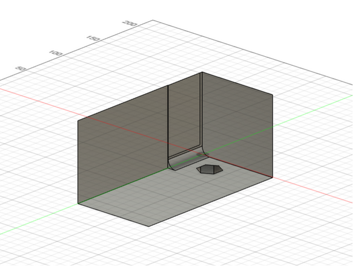
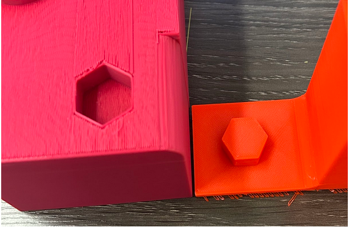
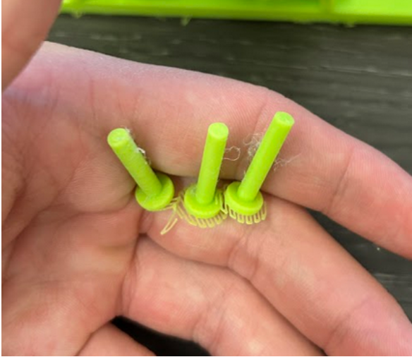
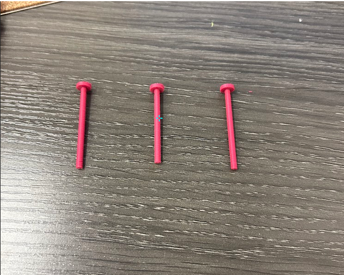
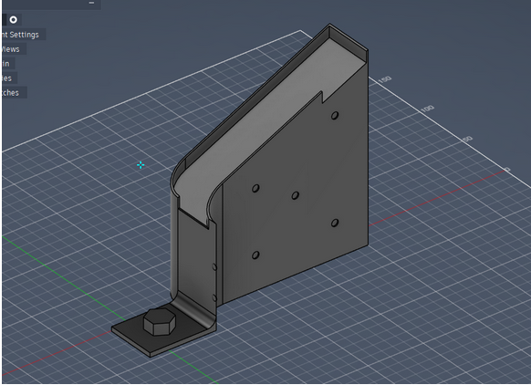
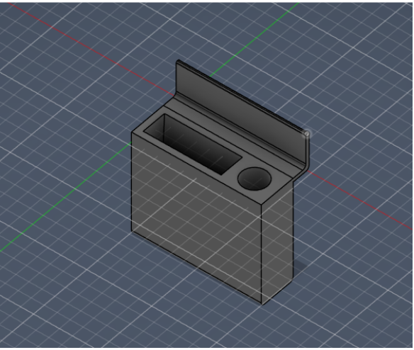
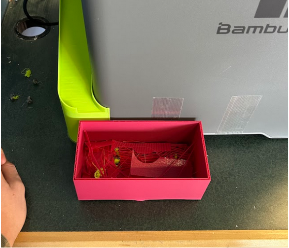

3D Printer Attachments
A waste chute, scraper, and glue stick holder — designed, tested, and redesigned across two build cycles.

Overview
Frequent 3D printing meant repeatedly hunting down the same tools and manually clearing filament waste after every print. This project designed a small family of attachments for a Bambu Lab P2S printer — a waste chute and bin, a scraper, and a glue stick holder — modeled in Fusion 360 against written specs and refined across two full design cycles based on what broke during testing.
STAR Write-Up
- Situation
- Frequent 3D printing meant repeatedly hunting down the same handful of tools, and printers like the Bambu P2S regularly jettisoned filament waste that had to be collected by hand to keep the area usable.
- Task
- Design a small family of 3D-printed attachments: a waste chute and bin, a scraper, and a glue stick holder that could mount or tether directly to the printer.
- Action
- Modeled every part in Fusion 360 against the written specs, 3D printed each iteration in PLA, and problem-solved fit issues as they came up (e.g. cutting a misaligned locking key off with a handsaw, boring out an undersized hole on a drill press, and replacing a pin design whose threads kept snapping with a single continuous pin. ) A second design cycle reshaped the slide to stop waste from overshooting and replaced the original glue stick holder and magnetic scraper with one simpler, combined holder.
- Result
- A working waste-collection slide and bin, plus a combined scraper/glue-stick holder, installed and tested at the print station — including a water-load test on the bin and a real-scrap test on the slide — with a documented punch list for further iteration (bin wobble, holder filament cost, weak magnetic mounting).
Tech Stack
- Autodesk Fusion 360
- Bambu Lab P2S 3D Printer
- PLA Filament
- Handsaw & Drill Press
- Magnets
- Grip Tape
Key Specs
A few of the constraints the waste bin had to meet: hold roughly 0.00675m³ of material with 1cm of headroom for comfortable emptying, support the weight equivalent of 0.01m³ of PLA without breaking, extend no more than 5cm from the back of the printer, and print in under 3 hours.
Behind the Scenes — Design Cycle 1




Behind the Scenes — Design Cycle 2


